Chapter 6. 관계 데이터 연산(Relationship Data Operation)
1절. 관계 데이터 연산 개념
데이터 모델(Data Model)
| 종류 |
설명 |
예시 |
개념적
데이터 모델 |
사람의 머리로 이해하도록 현실 세계를 모델링하여 데이터베이스의 개념적 구조로 표현하는 도구 |
개체-관계 모델
(Entity-Relationship Model) |
논리적
데이터 모델 |
개념적 구조를 논리적으로 모델링하여 데이터베이스의 논리적 구조로 표현하는 도구 |
관계 데이터 모델 |
데이터 모델 구성
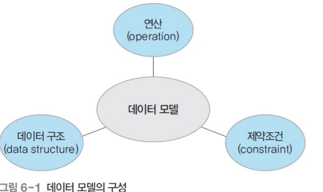
| 데이터 구조 종류 |
설명 |
| 개념적 구조 |
현실 세계를 개념 세계로 추상화 시 어떤 요소로 구성되었는지 표현하는 개념적 구조 |
| 논리적 구조 |
데이터를 어떤 모습으로 저장할지 표현하는 논리적 구조 |
관계 데이터 연산(Relational Data Operation)
- 관계 데이터 모델 연산
- 원하는 데이터를 얻기 위해 릴레이션에 필요한 처리 요구 수행
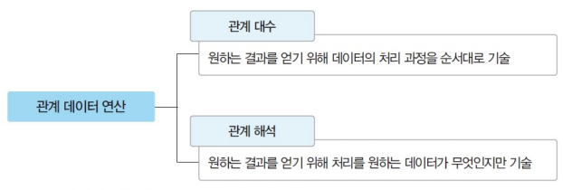
관계 대수와 관계 해석 역할
- 데이터 언어 유용성 검증 기준
- 관계 대수·관계 해석으로 기술 가능한 모든 질의를 기술하는 데이터 언어 : 관계적으로 완전함(relationally complete)
- 질의(query) : 데이터에 대한 처리 요구
2절. 관계 대수
관계 대수(Relational Algebra)
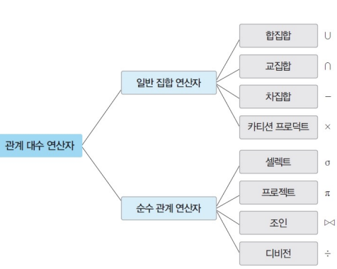
- 절차적 언어(Procedural Language)
- 원하는 결과를 위해 릴레이션 처리 과정을 순서대로 기술하는 언어
- 릴레이션 처리 연산자들(8개) 모임
- 일반 집합 연산자
- 순수 관계 연산자
- 폐쇄적 특성(closure property)
- 피연산자 · 연산 결과 모두 릴레이션
일반 집합 연산자(Set Operation)
- 릴레이션이 튜플의 집합인 개념을 이용하는 연산자
| 연산자 |
기호 |
표현 |
의미 |
| 합집합 |
∪ |
R ∪ S |
릴레이션 R과 S의 합집합 반환 |
| 교집합 |
∩ |
R ∩ S |
릴레이션 R과 S의 교집합 반환 |
| 차집합 |
- |
R - S |
릴레이션 R과 S의 차집합 반환 |
| 카티션 프로덕트 |
✕ |
R ✕ S |
릴레이션 R의 각 튜플과 릴레이션 S의 각 튜플을 모두 연결 후 만든 새로운 튜플 반환 |
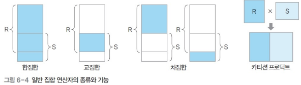
| 특성 |
조건 |
| 2개의 피연산자 |
2개의 릴레이션 대상 연산 수행 |
| 피연산자 두 릴레이션의 합병 필요 |
합집합·교집합·차집합의 경우 |
| 합병 가능 (union-compatible) 조건 |
| 두 릴레이션의 동등한 차수 |
| 두 릴레이션에서 서로 대응되는 속성 도메인 일치 |
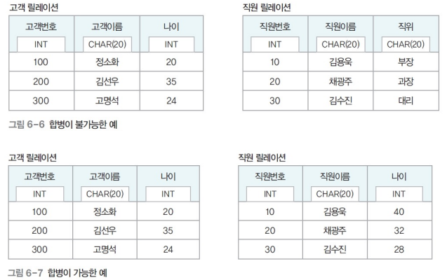
합집합(Union) : R ∪ S
| 결과 릴레이션 튜플 조건 |
| 릴레이션 R에 속함 |
| 릴레이션 S에 속함 |
| 결과 릴레이션 특징 |
설명 |
| 차수(Degree) |
릴레이션 R과 S의 차수와 동일 |
| 카디널리티(Cardinality) |
R ∪ S 카디널리티 >= R or S |
| 교환적 특징 |
R ∪ S = S ∪ R |
| 결합적 특징 |
(R ∪ S) ∪ T = R ∪ (S ∪ T) |
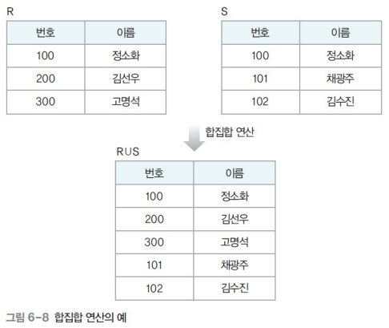
2. 교집합(Intersection) : R ∩ S
| 결과 릴레이션 튜플 조건 |
| 릴레이션 R과 S에 공통으로 속하는 튜플 |
| 결과 릴레이션 특징 |
설명 |
| 차수(Degree) |
릴레이션 R과 S의 차수와 동일 |
| 카디널리티(Cardinality) |
R ∪ S 카디널리티 <= R or S |
| 교환적 특징 |
R ∩ S = S ∩ R |
| 결합적 특징 |
(R ∩ S) ∩ T = R ∩ (S ∩ T) |
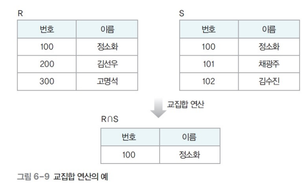
3. 차집합(Difference) : R - S
| 결과 릴레이션 튜플 조건 |
| 릴레이션 R에는 존재하지만 릴레이션 S에는 존재하지 않는 튜플 |
| 결과 릴레이션 특징 |
설명 |
| 차수(Degree) |
릴레이션 R과 S의 차수와 동일 |
| 카디널리티(Cardinality) |
R - S 카디널리티 or S - R 카디널리티 <= R or S |
| 교환적 특징 |
없음 |
| 결합적 특징 |
없음 |
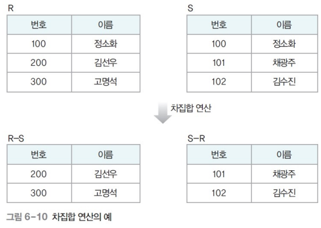
4. 카티션 프로덕트(Cartesian Product) : R ✕ S
| 결과 릴레이션 튜플 조건 |
| 릴레이션 R에 속한 각 튜플과 릴레이션 S에 속한 각 튜플을 모두 연결하여 만들어진 새로운 튜플 |
| 결과 릴레이션 특징 |
설명 |
| 차수(Degree) |
릴레이션 R과 S의 차수를 더한 것과 동일 |
| 카디널리티(Cardinality) |
R ✕ S 카디널리티 == R 카디널리티 ✕ S 카디널리티 |
| 교환적 특징 |
R ✕ S · S ✕ R |
| 결합적 특징 |
(R ✕ S) ✕ T = R ✕ (S ✕ T) |
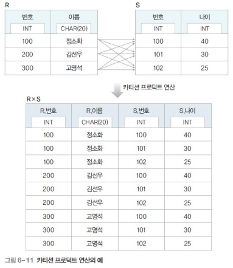
순수 관계 연산자(Relational Operation)
| 연산자 |
기호 |
표현 |
의미 |
| 셀렉트 |
σ |
\(σ_{조건식}(R)\) |
릴레이션 R에서 조건 만족 튜플들 반환 |
| 프로젝트 |
π |
\(π_{속성리스트}(R)\) |
릴레이션 R에서 주어진 속성들의 값으로 구성된 튜플들 반환 |
| 조인 |
⋈ |
R ⋈ S |
공통 속성으로 릴레이션 R과 S의 튜플들을 연결하여 만든 새로운 튜플들 반환 |
| 디비전 |
÷ |
R ÷ S |
릴레이션 S의 모든 튜플과 관련이 있는 릴레이션 R의 튜플들 반환 |
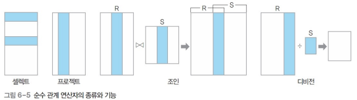
1. 셀렉트(Select) · 셀렉션(Selection)
| 결과 릴레이션 튜플 조건 |
| 조건을 만족하는 튜플만 선택 |
| 결과 릴레이션 특징 |
설명 |
| 단항 연산자 |
하나의 릴레이션 대상 연산 |
| 수학적 표현법 |
\(σ_{조건식}(릴레이션)\) |
| 데이터 언어적 표현법 |
릴레이션 WHERE 조건식 |
| 결과 릴레이션 |
연산 대상 릴레이션의 수평적 부분 집합 |
| 교환적 특징 |
\(σ_{조건식1}(σ_{조건식2}(릴레이션)) = σ_{조건식2}(σ_{조건식1}(릴레이션)) = σ_{조건식1 ∧ 조건식2}(릴레이션)\) |
- 조건(Predicate : 조건)식
- 비교식 · 프레디킷
- 속성이나 상수의 비교 · 속성들 간 비교로 표현
- 비교 연산자(> · ≥ · < · ≤ · = · ≠)
- 논리 연산자(∧(and), ∨(or), ¬(not))
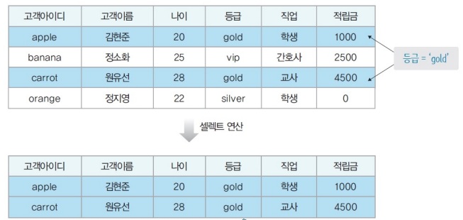
셀렉션 연산 예시
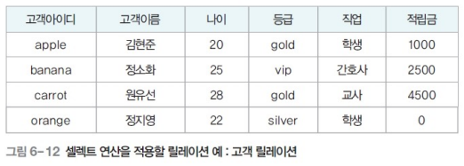
| ex 1 : 등급이 gold인 튜플 검색 |
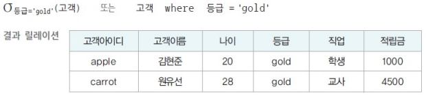 |
|
|
| ex 2 : 등급이 gold이고 적립금이 2000 이상인 튜플 검색 |
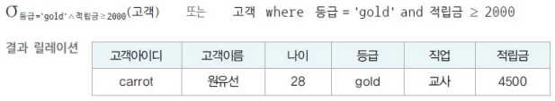 |
|
|
2. 프로젝트(Project) · 프로젝션(Projection)
| 결과 릴레이션 튜플 조건 |
| 릴레이션에서 선택한 속성 값 |
| 결과 릴레이션 특징 |
설명 |
| 단항 연산자 |
하나의 릴레이션 대상 연산 |
| 수학적 표현법 |
\(π_{속성리스트}(릴레이션)\) |
| 데이터 언어적 표현법 |
릴레이션[속성리스트] |
| 결과 릴레이션 |
연산 대상 릴레이션의 수직적 부분 집합 |
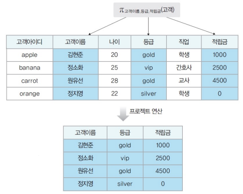
프로젝션 연산 예시
| ex 1 : 고객 릴레이션의 이름 · 주소 · 핸드폰 프로젝션 |
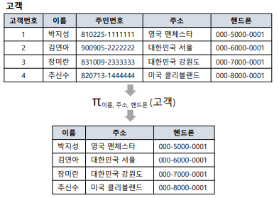 |
|
|
| ex 2 : 고객이름, 등급, 적립금 검색 |
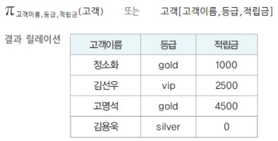 |
|
|
ex 3 : 등급 검색
- 동일한 튜플은 중복 없이 한 번만 출력 |
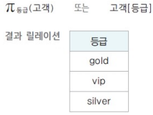 |
|
|
3. 조인(Join)
| 결과 릴레이션 튜플 조건 |
| 조인 속성의 값이 같은 튜플만 연결하여 생성된 튜플 조합 |
| 결과 릴레이션 특징 |
설명 |
| 이항 연산자 |
둘 이상의 릴레이션 대상 연산 |
| 수학적 표현법 |
릴레이션1 ⋈ 릴레이션2 |
| 다른 표현 |
동등 조인(equi-join) |
| 조인 속성 |
두 릴레이션의 공통 속성 |
| ex 1 : 고객 릴레이션의 '고객아이디'와 주문 릴레이션의 '고객아이디' 조인 |
|
|
|
| ex 2 : 정소화 고객이 주문한 제품 검색 |
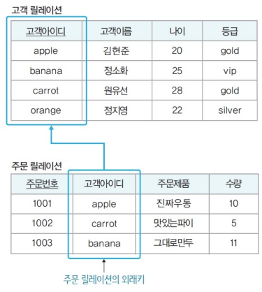 |
|
|
| ex 2 - 1 : 릴레이션 소속 구분을 위해 '릴레이션.속성' 형식 표기 |
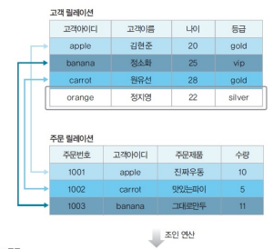 |
|
|
조인 종류
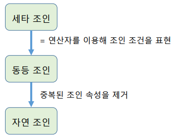
세타 조인(theta-join, θ-join)
| 결과 릴레이션 튜플 조건 |
| 주어진 조인 조건을 만족하는 두 릴레이션의 모든 튜플을 연결하여 생성된 새로운 튜플 |
| 결과 릴레이션 특징 |
설명 |
| 차수(Degree) |
두 릴레이션 차수의 합 |
| 수학적 표현법 |
릴레이션1 \(⋈_{A θ B}\) 릴레이션2 |
| θ |
비교 연산자(\(> · ≥ · < · ≤ · = · ≠\)) |
동등 조인(equi-join)
| 결과 릴레이션 특징 |
설명 |
| 수학적 표현법 |
릴레이션1 \(⋈_{A = B}\) 릴레이션2 |
자연 조인(Natural Join)
- 동등 조인의 결과 릴레이션에서 조인 속성이 한 번만 나타나는 연산
| 결과 릴레이션 특징 |
설명 |
| 수학적 표현법 |
릴레이션1 \(⋈_N\) 릴레이션2 |
자연 조인 예시
| ex 1 : 고객과 주문 릴레이션 |
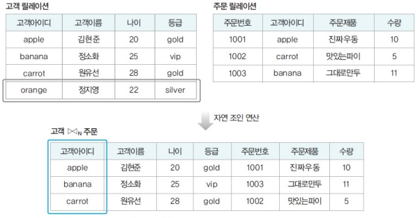 |
|
|
| ex 2 : 2개의 속성으로 이루어진 조인 속성 |
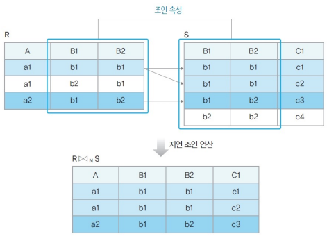 |
|
|
4. 디비전(Division)
| 결과 릴레이션 튜플 조건 |
| 릴레이션 2의 모든 튜플과 관련이 있는 릴레이션 1의 튜플 |
| 릴레이션 1이 릴레이션 2의 모든 속성 포함 필수 |
| 도메인 일치 필수 |
| 결과 릴레이션 특징 |
설명 |
| 수학적 표현법 |
릴레이션 1 ÷ 릴레이션 2 |
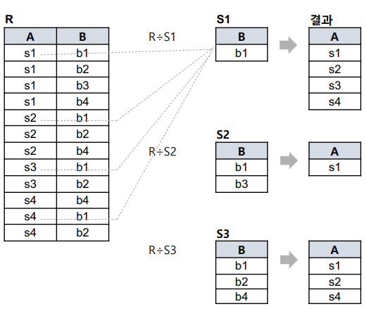
디비전 예시
| ex 1 : 고객과 우수등급 릴레이션 |
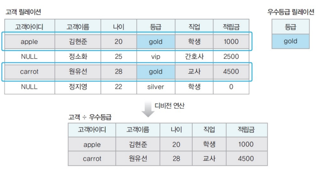 |
|
|
| ex 2 : 주문내역, 제품1, 제품2 릴레이션 |
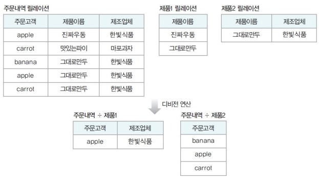 |
|
|
관계 대수 질의 표현
| 사용할 고객 릴레이션과 주문 릴레이션 |
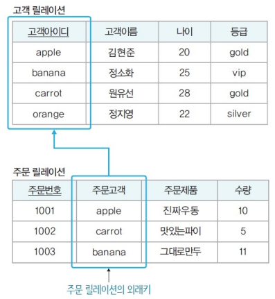 |
|
|
| ex 1 : 등급이 gold인 고객의 이름과 나이 |
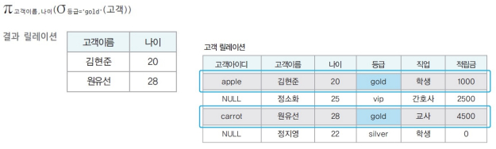 |
|
|
| ex 2 : 고객이름이 원유선인 고객의 등급과 원유선 고객이 주문한 주문제품, 수량 |
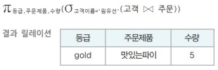 |
|
|
| ex 3 : 주문 수량이 10개 미만인 주문 내역을 제외한 검색 |
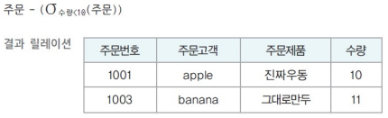 |
|
|
2.5절. 확장 관계 대수 연산자
세미 조인(Semi Join)
- 확정 관계 대수 연산자
- 프로젝트 연산을 수행한 릴레이션을 이용하는 조인
- 불필요한 속성을 미리 제거
- 조인 연산 비용 감소
| 결과 릴레이션 튜플 조건 |
| 릴레이션 2를 조인 속성으로 프로젝트 연산 |
| 릴레이션 1에 자연 조인 |
| 결과 릴레이션 특징 |
설명 |
| 수학적 표현법 |
릴레이션 1 ⋉ 릴레이션 2 |
| 교환적 특징 |
없음 |
세미 조인 예시
| ex 1 : 고객 릴레이션과 주문 릴레이션 세미 조인 |
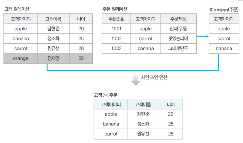 |
|
|
| ex 2 : 왼쪽이 닫힌 세미 조인 |
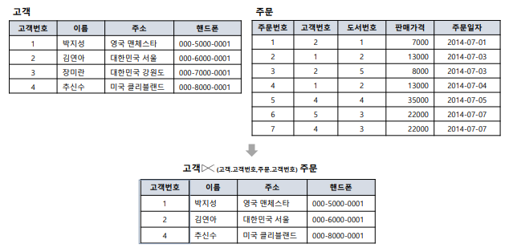 |
|
|
외부 조인(Outer Join)
|자연 조인 연산에서 제외되는 튜플도 결과 릴레이션에 포함|
|두 릴레이션에 있는 모든 튜플을 결과 릴레이션에 포함|
| 결과 릴레이션 특징 |
설명 |
| 수학적 표현법 |
릴레이션1 ⋈+ 릴레이션2 |
| 조인 실패 튜플 |
자연조인 시 조인에 실패한 튜플을 모두 조회하고 값이 없는 대응 속성을 NULL으로 반환 |
| 종류 |
1. 왼쪽(left) 외부조인
2. 오른쪽(right) 외부조인
3. 완전(full, 양쪽) 외부조인 |
| 형식 |
1. 왼쪽(left) 외부조인 : \(R ⟕_{(r, s)} S\) (릴레이션1 \(⋈^{+}\) 릴레이션2)
2. 완전(full) 외부조인 : \(R ⟗_{(r, s)} S\)
3. 오른쪽(right) 외부조인 : \(R ⟖_{(r, s)} S\) |
왼쪽 외부 조인(LEFT OUTER JOIN)
- 왼쪽 릴레이션 1에 존재하는 모든 튜플을 결과 릴레이션에 포함
| ex 1 : 왼쪽 외부 조인 예시 |
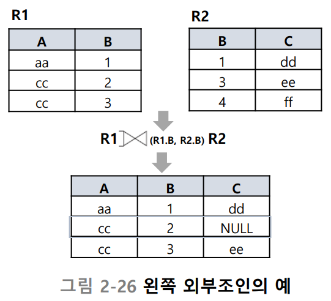 |
|
|
| ex 2 : 고객 릴레이션과 주문 릴레이션 왼쪽 외부 조인 연산 |
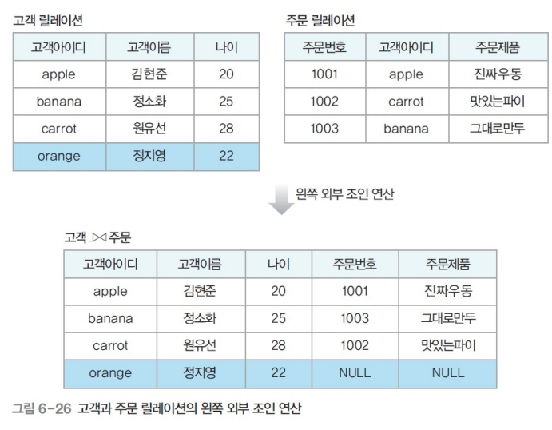 |
|
|
오른쪽 외부 조인(RIGHT OUTER JOIN)
- 오른쪽 릴레이션 2에 존재하는 모든 튜플을 결과 릴레이션에 포함
| ex 1 : 오른쪽 외부 조인 예시 |
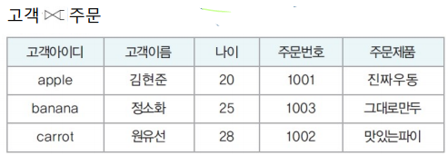 |
|
|
- 주문 릴레이션(릴레이션 2)에 만약 조인 연산에 참여하지 않는 튜플이 없는 경우
- 자연 조인 결과와 동일
완전 외부 조인(FULL OUTER JOIN)
- 두 릴레이션에 있는 모든 튜플을 결과 릴레이션에 포함
| ex 1 : 완전 외부 조인 예시 |
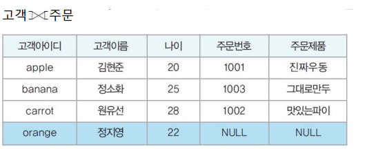 |
|
|
| ex 2 : 완전 외부 조인 예시 |
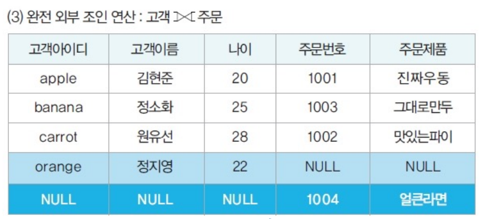 |
|
|
- 고객 릴레이션(릴레이션 1)에만 조인 연산에 참여하지 않는 튜플 존재
- 왼쪽 외부 조인 결과와 동일
외부 조인 정리(OUTER JOIN)
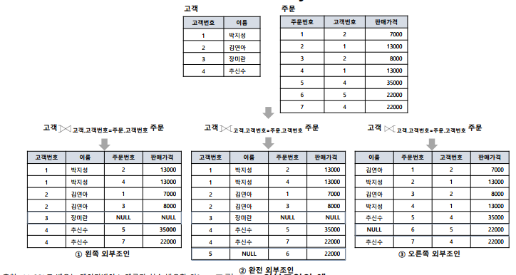
관계 대수 연산자 총정리
| 연산자 종류 |
대상 |
연산자 이름 |
기호 |
설명 |
| 기본 |
단항 |
셀렉션 |
\(σ\) |
릴레이션에서 조건에 만족하는 튜플 선택 |
| 기본 |
단항 |
프로젝션 |
\(π\) |
릴레이션 속성 선택 |
| 추가 |
단항 |
개명 |
\(p\) |
릴레이션 · 속성 이름 변경 |
| 유도 |
이항 |
디비전 |
÷ |
부모 릴레이션에 포함된 튜플의 값을 모두 갖고 있는 튜플을 분자 릴레이션에서 추출 |
| 기본 |
이항 |
합집합 |
∪ |
두 릴레이션의 합집합 |
| 기본 |
이항 |
차집합 |
- |
두 릴레이션의 차집합 |
| 유도 |
이항 |
교집합 |
∩ |
두 릴레이션의 교집합 |
| 기본 |
이항 |
카티션 프로덕트 |
× |
두 릴레이션에 속한 모든 튜플 집합 |
| 유도 |
이항 |
세타 조인 |
\(⋈_{\theta}\) |
두 릴레이션 간 비교 조건에 만족하는 집합 |
| 유도 |
이항 |
동등 조인 |
\(⋈\) |
두 릴레이션 간 같은 값을 가진 집합 |
| 유도 |
이항 |
자연 조인 |
\(⋈_{N}\) |
동등 조인에서 중복 속성 제거 |
| 유도 |
이항 |
세미 왼쪽 조인 |
\(⋉\) |
자연 조인 후 오른쪽 속성 제거 |
| 유도 |
이항 |
세미 오른쪽 조인 |
\(⋊\) |
자연 조인 후 왼쪽 속성 제거 |
| 유도 |
이항 |
왼쪽 외부 조인 |
⟕ |
1. 자연 조인 후 왼쪽의 모든 값을 결과로 추출
2. 조인 실패의 경우 한 쪽 값을 NULL로 반환 |
| 유도 |
이항 |
오른쪽 외부 조인 |
⟖ |
1. 자연 조인 후 오른쪽의 모든 값을 결과로 추출
2. 조인 실패의 경우 한 쪽 값을 NULL로 반환 |
| 유도 |
이항 |
완전 외부 조인 |
⟗ |
1. 자연 조인 후 양쪽의 모든 값을 결과로 추출
2. 조인 실패의 경우 한 쪽 값을 NULL로 반환 |
3절. 관계 해석
관계 해석(Relational Calculus)
- 비절차적 언어(Nonprocedural Language) : SQL
- 처리를 원하는 데이터가 무엇인지 기술하는 언어
- 어떻게 검색할 것인가 : X
- 무엇을 검색할 것인가 : O
- 선언적 표현법을 사용하는 비절차적 질의어
- ex : 어떤 관계 질의어 L이 관계 해석 · 관계 대수로 둘다 표현 가능한 질의일 경우 L은 "관계적으로 완전함" (relationally complete)
| 분류 |
설명 |
튜플 관계 해석
(Tuple Relational Calculus) |
. |
도메인 관계 해석
(Domain relational calculus) |
투플 변수 대신 도메인 변수(domain variables)를 사용하는 관계 해석 |
튜플 변수
도메인 관계 해석
| 관계 해석 종류 |
중심 |
| 튜플 관계 해석 |
튜플 중심 |
| 도메인 관계 해석 |
속성 중심 |
- ex : 이름이 'JohnB.Smith'인 사원의 생일과 주소 검색